Purpose: To learn effective methods for optimizing objectives - gradient descent. This method is based on a convex function.
Convex Optimization
The objective of this section is to solve the optimization problem below:
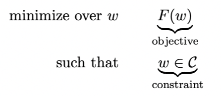
Where C⊂Rd, F:Rd→R. C is a convex set, and F is a convex function.
Definitions of Convex Function and Convex Set
Definition of Convex Function:
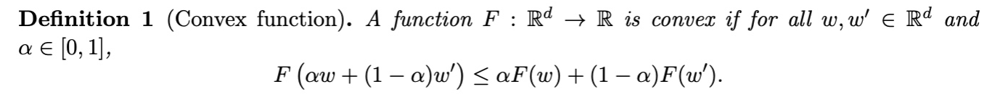
Definition of Convex Set:
Examples of Convex Functions:
- l2-norm: F(w)=∥x∥22=x⊤x
- Logistic function: F(w;x,y)=log(1+exp(−yw⊤x))
- Mean of Convex Functions: F(w)=m1∑i=1mFi(w)
First and Second-Order of Convex Function
First Order
For all ω,ω′∈Rd,
F(ω′)≥F(ω)+∇F(ω)⊤(ω′−ω)
Explanation: The function is above the tangent line at any point.
Second Order (Commonly used for determining convex function)
For all ω∈Rd,
∇2F(ω)⪰0
Or, the Hessian matrix ∇2F(ω) is semi-definite (PSD).
Explanation: The curvature of the function is always non-negative.
Theorem
When w satisfies ∇F(ω)=0, w is the global minimum of F.
Proof:
F(w′)≥F(w)+∇F(w)⊤(w′−w)⇒F(w′)≥F(w)
Three Bounds of Convex Functions
-
L-smooth Function (Upper Bound)
For all w,w′∈Rd,
F(w′)≤F(w)+∇F(w)⊤(w′−w)+2L∥w−w′∥22
-
Convex Function (Lower Bound)
For all w,w′∈Rd,
F(w′)≥F(w)+∇F(w)⊤(w′−w)
-
μ - Strong Convex Function (Lower Bound)
For all w,w′∈Rd,
F(w′)≥F(w)+∇F(w)⊤(w′−w)+2μ∥w−w′∥22
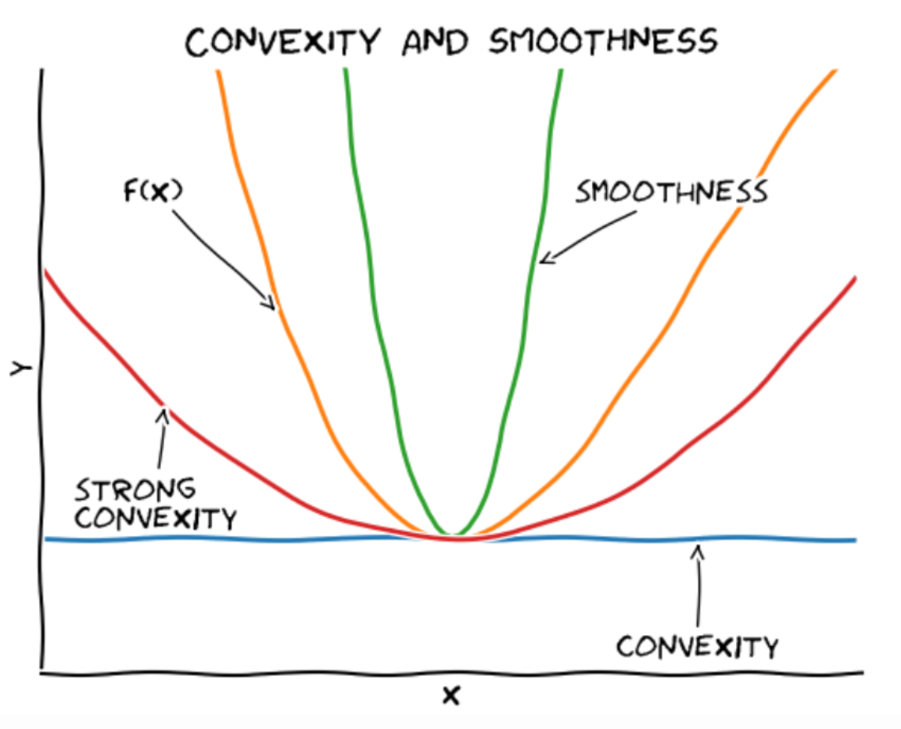
Gradient Descent
Algorithm Itself (GD)
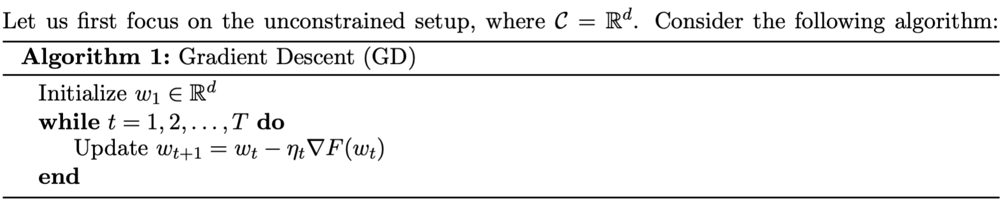
Where ηt is called the learning rate, indicating how much to move each time. The stopping condition is generally set as F(ωt)≤ϵ or ∥∇F(ωt)∥2≤ϵ.
Selecting Learning Rate / Step Size
Too large a learning rate can cause the results to diverge or even produce negative progress.
Too small a learning rate may take a long time to converge.
Gradient Descent for Smooth Functions
L-Smoothness Function
For all $\omega, \omega’ \in \mathbb{R}^d $,
F(w′)≤F(w)+∇F(w)⊤(w′−w)+2L∥w−w′∥22
Equivalent to saying ∇F is L-Lipschitz.
∥∇F(w)−∇F(w′)∥2≤L∥w−w′∥2
Explanation of Smoothness for Gradient Descent
To minimize F at w, we choose the minimum upper bound (L-smoothness), which is the following expression:
w′minF(w)+∇F(w)⊤(w′−w)+2L∥w′−w∥22
By setting the derivative to zero, we can obtain the next step w′, i.e.,
w′=w−L1∇F(w)
By comparing the GD algorithm, we can see that this corresponds to the gradient step with a learning rate $ \eta = 1/L $.
That is, according to the upper bound, the w′ obtained for the minimum upper bound corresponds to the lowest point of the upper bound, and its corresponding F(w′) must be smaller than F(w), thereby achieving gradient descent.
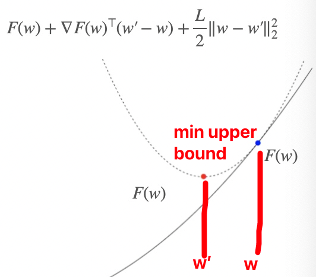
Convergence Proof
Theorem
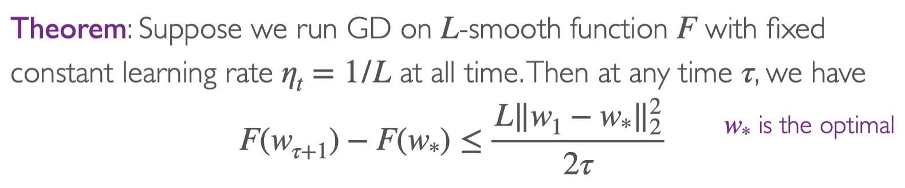
Explanation
Assuming at the beginning w1=0 and ∥ω∗∥2=1, then after T iterations, we have
F(wT+1)−F(ω∗)≤2TL
This indicates that after T=2ϵL=O(1/ϵ) steps, we can achieve F(wT+1)−F(w∗)≤ϵ. Hence, we say that gradient descent has a convergence rate of O(1/T).
Proof
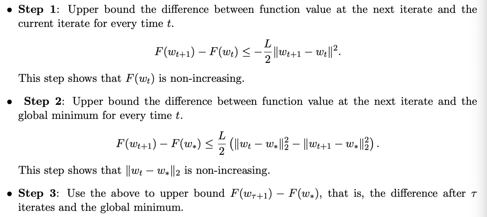
For the specific proof, refer to the attached PDF (Lec10-2).
Gradient Descent on Smooth and Strongly Convex Functions
μ- Strongly Convex Function
For all ω,ω′∈Rd,
Lower bound of F(w)
F(w′)≥F(w)+∇F(w)⊤(w′−w)+2μ∥w−w′∥22
Convergence Proof
Theorem
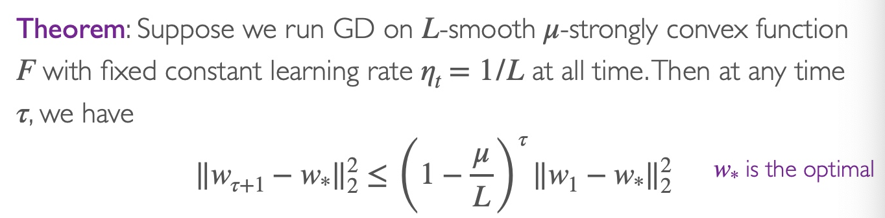
Explanation
Assuming at the beginning w1=0 and ∥ω∗∥2=1, then after T iterations, we have
∥wT+1−w∗∥22≤(1−Lμ)⊤
This indicates that after T=μLlog(1/ϵ)=O(log(1/ϵ)) steps, we can achieve ∥wT+1−w∗∥2≤ϵ. Hence, we say that gradient descent has a convergence rate of O(exp(−T)).
Appendix
GD converge with L smooth and F proof
Step 1
Based on the smoothness Equation 1, at time t,
F(wt+1)−F(wt)≤∇F(wt)⊤(wt+1−wt)+2L∥wt+1−wt∥22
Substituting ∇F(wt)=L(wt−wt+1) into Equation (4),
F(wt+1)−F(wt)≤L(wt−wt+1)⊤(wt+1−wt)+2L∥wt+1−wt∥22=−L(wt+1−wt)⊤(wt+1−wt)+2L∥wt+1−wt∥22=−L∥wt+1−wt∥22+2L∥wt+1−wt∥22=−2L∥wt+1−wt∥22
Step 2
Based on convex function Equation 2 and ∇F(wt)=L(wt−wt+1), we obtain
F(w∗)⇒F(wt)−F(w∗)≥F(w)+∇F(w)⊤(w∗−w)≤L(wt−wt−1)⊤(wt−w∗)
And as
∥wt+1−w∗∥22=∥wt+1−wt+wt−w∗∥22=∥wt+1−wt∥22+∥wt−w∗∥22+2(wt+1−wt)⊤(wt−w∗)
Substituting Equation (7) into Equation (6), we get
F(wt)−F(w∗)≤2L(∥wt+1−wt∥22+∥wt−w∗∥22−∥wt+1−w∗∥22)
Substituting Equation (5) into Equation (8)
F(wt+1)−F(wt)+F(wt)−F(w∗)≤2L(∥wt−w∗∥22−∥wt+1−w∗∥22)≤2L∥wt−w∗∥22
Step 3
Based on Equation 9, summing from tau+1 to tau yields
F(wτ+1)−F(w∗)+F(wτ+1)−F(w∗)+...+F(wτ+1)−F(w∗)=τ(F(wτ+1)−F(w∗))≤F(wτ+1)−F(w∗)+F(wτ)−F(w∗)+...+F(w1)−F(w∗)=t=1∑τ(F(wt+1)−F(w∗))≤2L(∥wτ−w∗∥22−∥wτ+1−w∗∥22+∥wτ−1−w∗∥22−∥wτ−w∗∥22)+...+∥w1−w∗∥22−∥w2−w∗∥22)≤2L(∥w1−w∗∥22−∥wτ+1−w∗∥22)≤2L∥w1−w∗∥22
Substituting w1=0 and ∥w∗∥22=1, after T iterations (i.e., τ=T), we get
F(wT+1)−F(w∗)≤2TL
This indicates that after T=2ϵL iterations, function F converges, i.e., F(wT+1)−F(w∗)≤ϵ
Comparison of Different Gradient Descent Algorithms (Not part of the course requirements)
Batch Gradient Descent | Standard Gradient Descent | Batch GD
Computes gradient using all samples every time (i=1～n)
f(x)=n1i=1∑nfi(x)∇f(x)=n1i=1∑n∇fi(x)
Advantages: Accurate gradient update
Disadvantages: Only guarantees global optimum for convex function; slow convergence
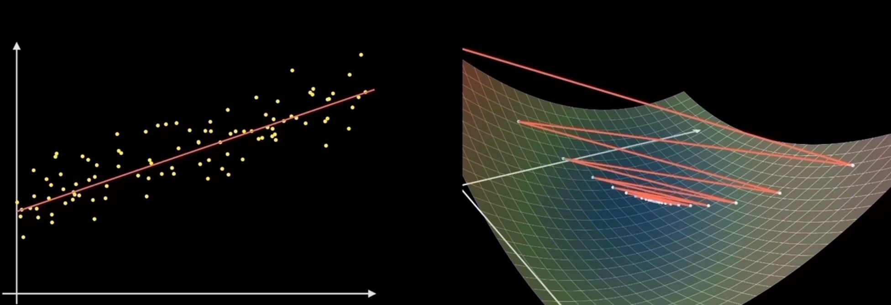
Stochastic Gradient Descent | Stochastic GD
Computes gradient using only one sample point every time (i is any value from 1 to n, randomly chosen)
f(x)=fi(x)∇f(x)=∇fi(x)
Advantages: Fast training speed
Disadvantages: Tends to jump around near the optimum, might not reach the optimum; limited to the vicinity of the optimal point
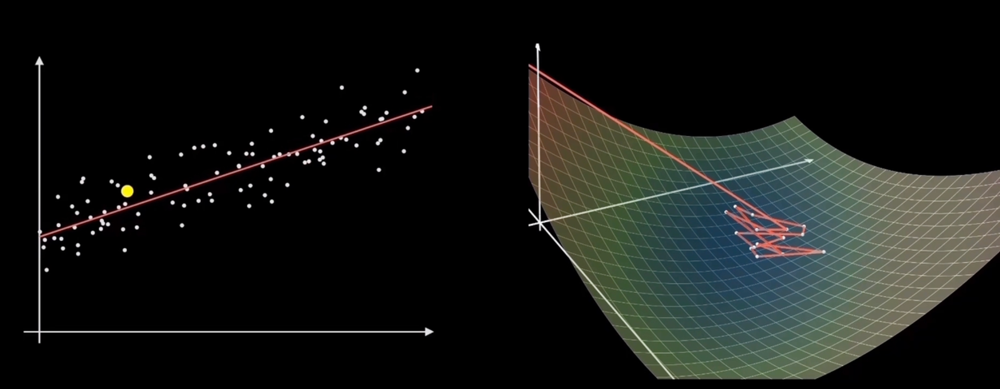
Mini-Batch Gradient Descent | Mini-Batch GD
Computes gradient using a batch of sample points every time (selects k samples randomly from n samples)
f(x)=k1i=1∑kfi(x)∇f(x)=k1i=1∑k∇fi(x)
Advantages: Faster training speed
Disadvantages: Chooses the direction of the smallest average gradient
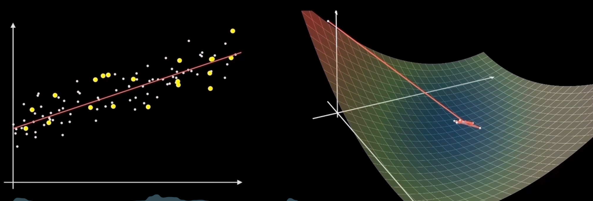
Note: The content in this blog is class notes shared for educational purposes only. Some images and content are sourced from textbooks, teacher materials, and the internet. If there is any infringement, please contact aursus.blog@gmail.com for removal.